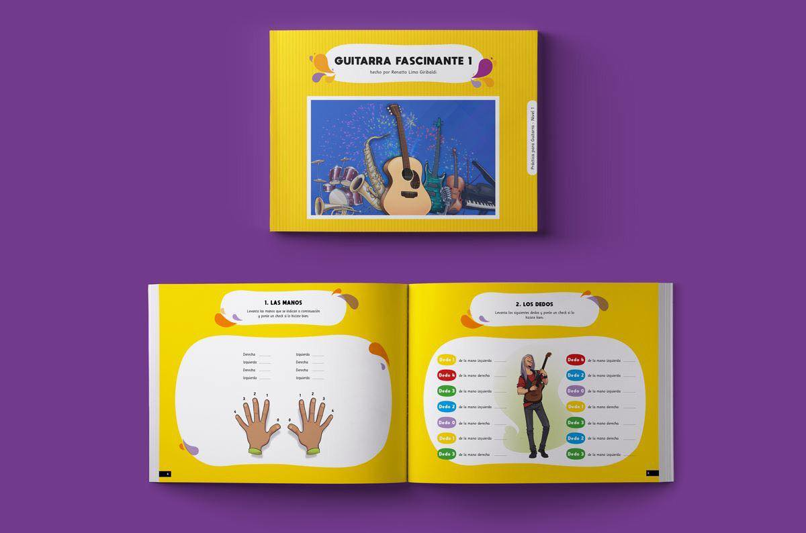

Noticias
¡Feliz día a todos los psicólogos! Sin dejar pasar por alto esta fecha especial, queremos felicitar a todos los psicólogos, y más aún los que comparten su música para intervenir en salud mental a través del equipo. Celebramos su labor, entrega y esfuerzo. UMA - Psicología y Música
Estimados seguidores, 🎼🎸🎸🎸 Hemos adquirido dos ejemplares didácticos para el aprendizaje de guitarra gracias a nuestros amigos de Educador Musical. La próxima semana lanzaremos el sorteo de los mismos. Esperamos les sea de mucha utilidad. ¡Atentos!
Entre los dos y los siete años, los chicos aprenden a hablar, a dibujar, a gesticular, a manejar sistemas gestuales, numéricos y musicales. Lo que es más, cumplen esta proeza de aprendizaje con tal velocidad y eficacia que parece razonable asumir que cuando ingresan en la escuela ya son seres plenamente capaces de utilizar símbolos con fluidez.